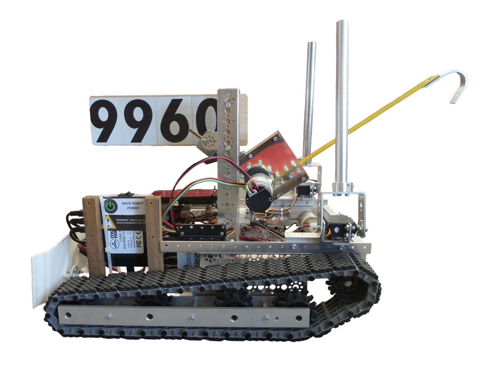
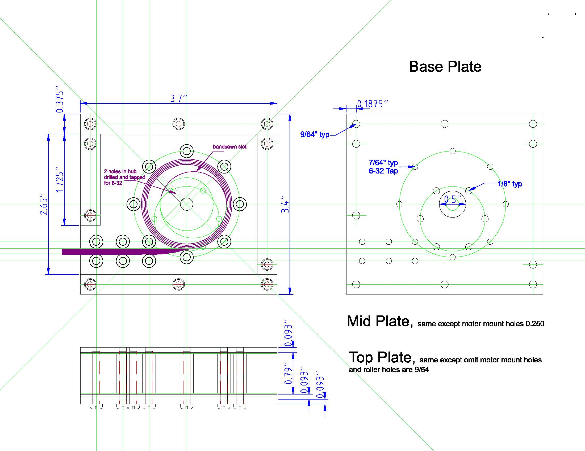
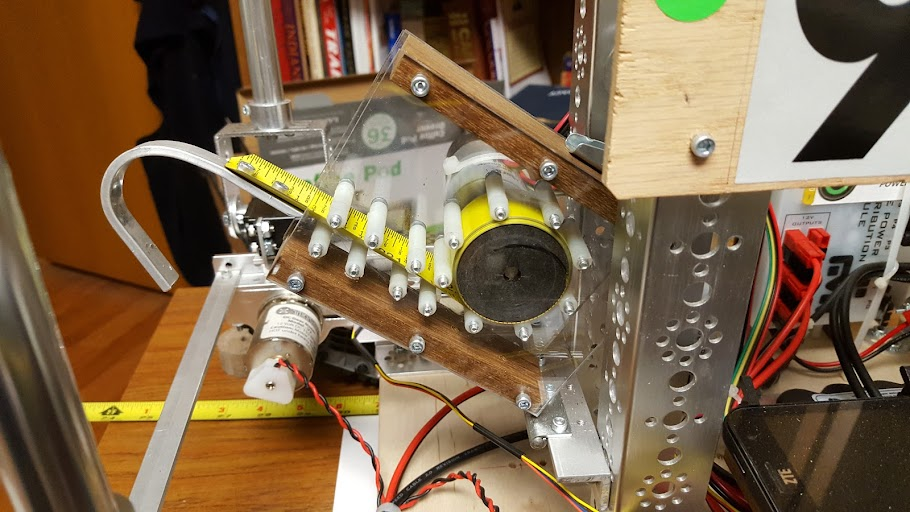

Result details are not available (FTC records only go back as far as 2019). Our robot could climb well and trip climbers, but could not sense color or push the beacon buttons. It also could sweep debris into the floor location, but not deposit it in mountain buckets.


Reflections from the team on this season to be added — what worked, what didn't, what we'd redesign with hindsight, and what carried forward into the next year.